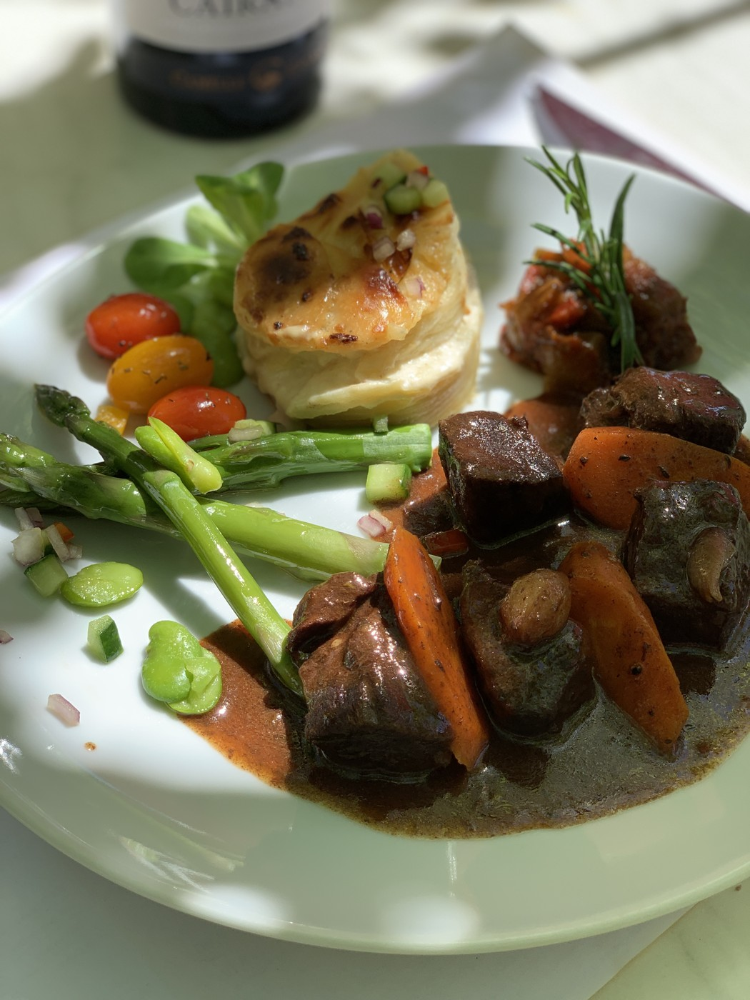
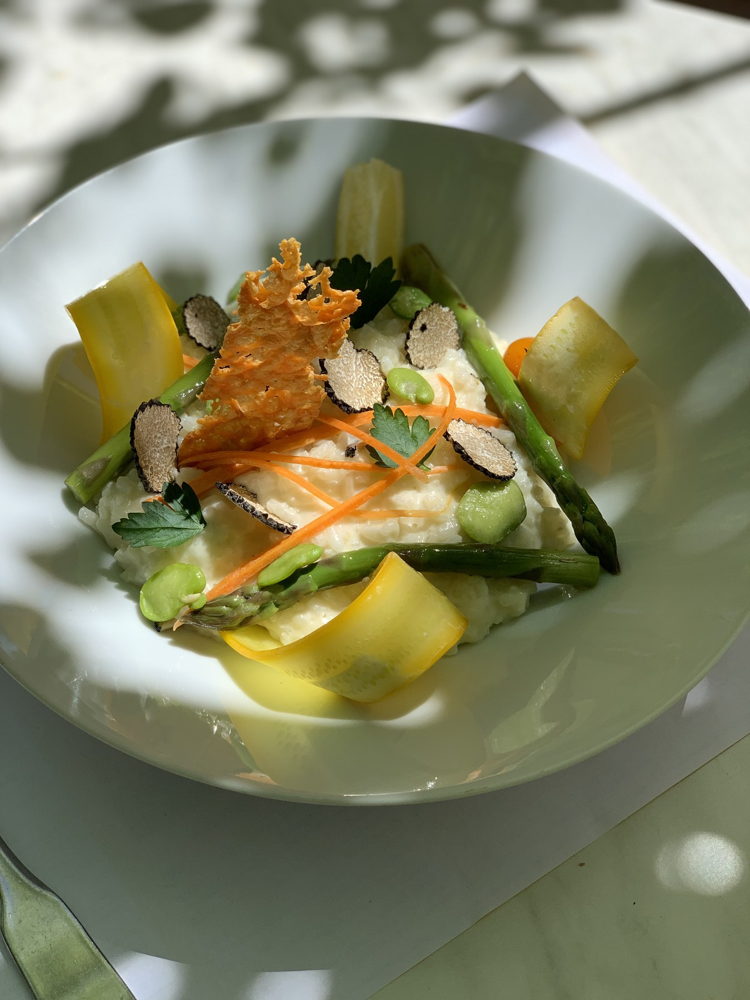
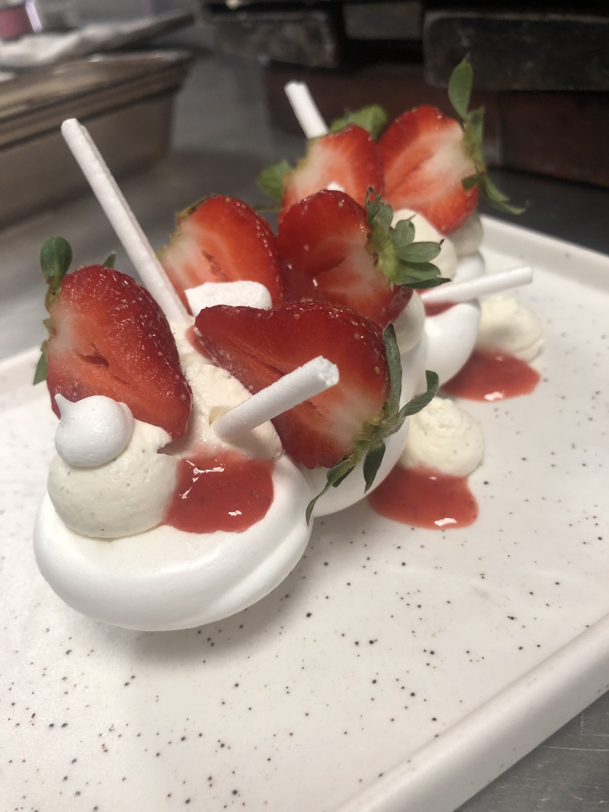
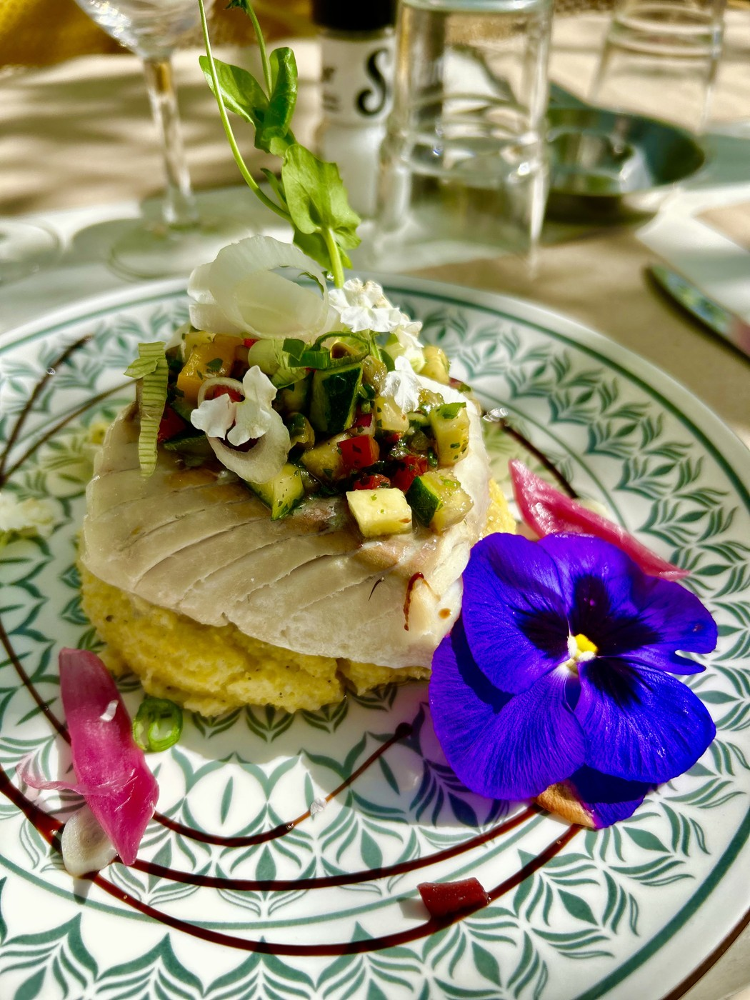
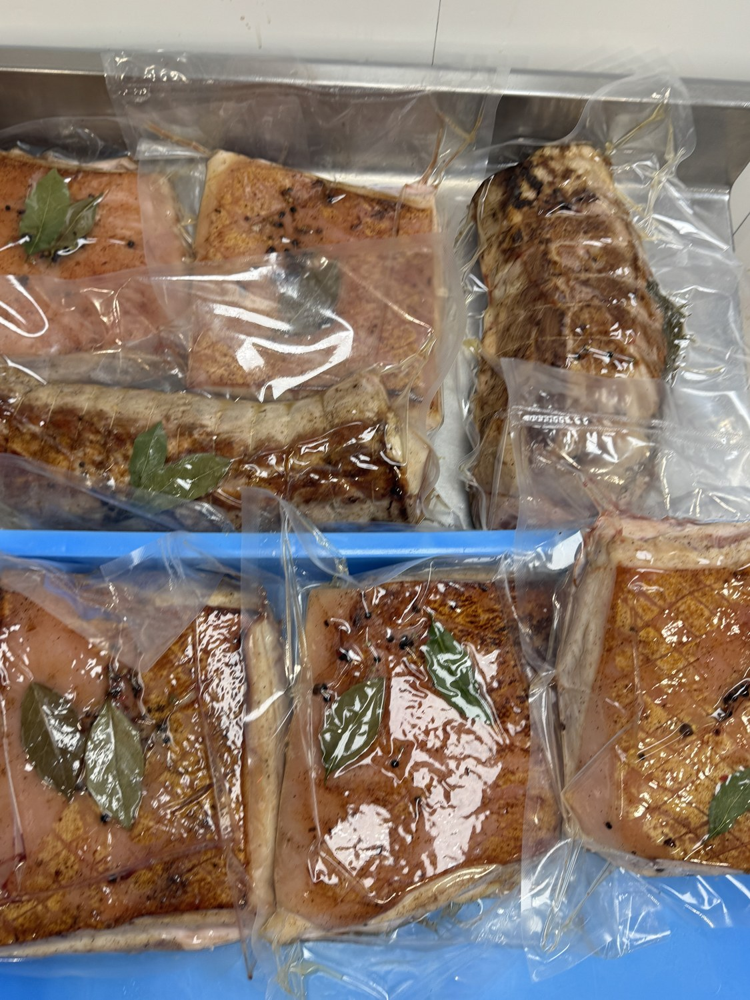
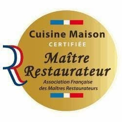
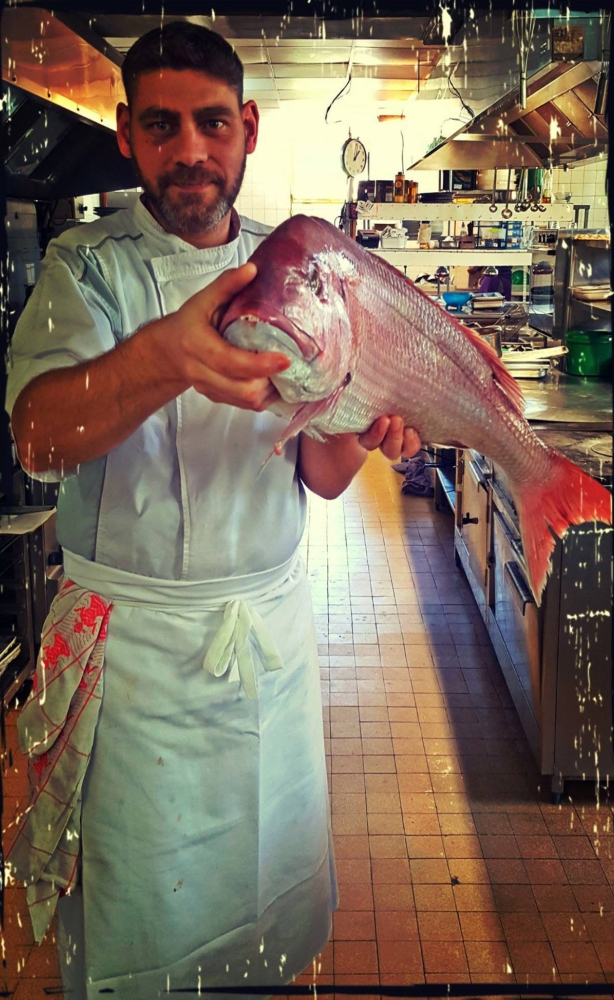
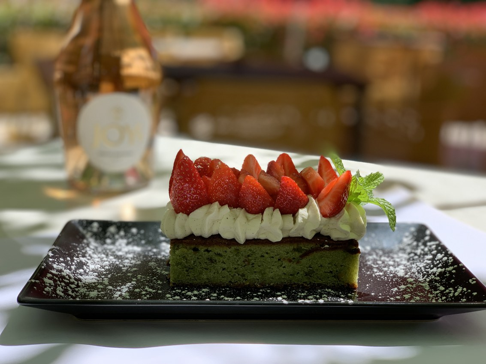
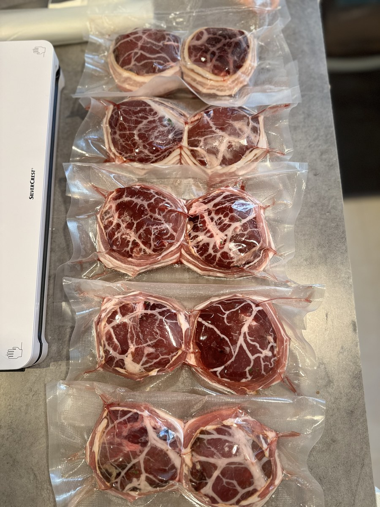
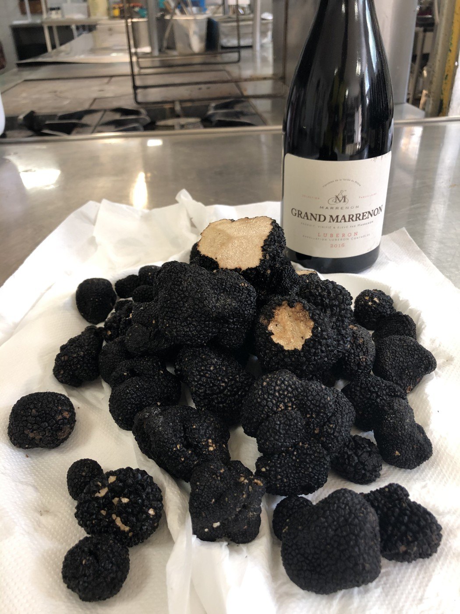

01 / À DOMICILEUne table, rien que pour vous
Dîner en amoureux, repas en famille ou soirée entre amis : un menu personnalisé, préparé chez vous.
Préparer mon dîner ↗L’ISLE-SUR-LA-SORGUE · VAUCLUSE · LUBERON
Un dîner chez vous, une fête à célébrer, un événement professionnel. Je crée une cuisine sur mesure pour les moments qui comptent.

Une cuisine vivante, des produits choisis,
et le temps de profiter de vos invités.
POUR LES PARTICULIERS
D’un repas en petit comité à une réception festive, chaque prestation commence par vos envies.

01 / À DOMICILEDîner en amoureux, repas en famille ou soirée entre amis : un menu personnalisé, préparé chez vous.
Préparer mon dîner ↗
02 / CÉLÉBRATIONSAnniversaire, fête privée ou réunion de famille : une proposition culinaire pensée pour votre événement.
Organiser ma réception ↗
03 / SUR MESUREVos goûts, la saison et les besoins de vos convives guident la création du menu. Parlons aussi de vos allergies et contraintes alimentaires.
Imaginer mon menu ↗FORMULES & TARIFS
Des produits locaux, une cuisine de saison et une proposition adaptée à votre occasion.
40 € / convive, à partir de
Un plat unique provençal et un dessert pour un repas chaleureux avec vos proches.
90 € / convive, à partir de
Une expérience raffinée en quatre temps, autour de produits nobles.
30 € / convive, à partir de
Des formules adaptées aux rassemblements, anniversaires et célébrations.
Traiteur, repas événementiel et brunch : sur devis. Le prix final dépend du menu, du nombre de convives, de la durée et du déplacement.
Consulter toutes les formules et les modalités ↗
POUR LES PROFESSIONNELS
Repas professionnels, cocktails et réceptions : une prestation culinaire adaptée à votre format et à vos invités.
Production sur site ou en laboratoire, organisation et transmission du savoir-faire : un accompagnement concret, adapté à votre établissement.
Vous accompagner dans la maîtrise de la technique et l’organisation de votre production, avec une attention à la régularité et aux coûts matières.

Le goût du fait maison et le savoir-faire culinaire au cœur de mon approche.
Cocktails dînatoires & événements d’entreprise ↗
LE CHEF, TOUT SIMPLEMENT
Trente ans en cuisine, et toujours la même envie : faire plaisir à travers une assiette.
Installé à L’Isle-sur-la-Sorgue, je puise mon inspiration dans les saveurs provençales, les produits locaux et le rythme des saisons. Une cuisine ouverte sur le monde, sincère et généreuse.
J’accompagne aujourd’hui les particuliers et les professionnels avec la même exigence : écouter, proposer et cuisiner une expérience qui vous ressemble.
Faisons connaissance ↗Formé à l’école hôtellière de Tain-l’Hermitage, mon parcours m’a conduit dans de nombreux établissements, dont la Villa Augusta des frères Pourcel. Aujourd’hui, je souhaite rapprocher la haute cuisine de l’intimité de votre maison.

« Le plaisir est dans le partage. »QUELQUES CRÉATIONS
Un aperçu de ma cuisine. Chaque menu évolue au fil des saisons et de votre projet.




Les photographies s’ouvrent en grand format.

LE GOÛT DES BELLES ASSOCIATIONS
Une assiette, un vin, une rencontre.
Prolongez votre expérience à table avec des accords pensés autour du menu et de vos goûts. Les saveurs de Provence et les vins du Luberon ouvrent de belles pistes à explorer ensemble.
Parlons de vos préférences lors de la préparation de votre repas.
Imaginer mon repas et ses accords ↗VOTRE PRESTATION, SIMPLEMENT
La date, le lieu, vos convives et vos envies. Je prends le temps de comprendre votre projet.
Je vous propose un menu et un devis personnalisés, selon votre événement et vos besoins.
Une fois les détails convenus, place à la cuisine et au plaisir de partager votre moment.
ACTUALITÉS & MÉDIAS
FRANCE BLEU VAUCLUSE · LA VIE EN BLEU AVEC LES TOQUÉS
Retrouvez David, du restaurant El Pescador à L’Isle-sur-la-Sorgue, dans l’émission culinaire de France Bleu.
Retrouver l’émission sur France Bleu ↗UNE ENVIE, UNE OCCASION ?
À L’Isle-sur-la-Sorgue, en Vaucluse et dans le Luberon.
Déplacements à convenir selon votre projet.
LES QUESTIONS FRÉQUENTES
Le devis dépend du menu, du nombre de convives, du lieu et du format de la prestation. Je vous propose une offre personnalisée après notre premier échange.
Le menu se construit avec vous. Signalez dès le premier contact les allergies, intolérances et régimes alimentaires afin que nous puissions en discuter.
Oui. Je propose de la production culinaire et un accompagnement en organisation et cuisine sous-vide. Le contenu de l’intervention est défini selon votre établissement.